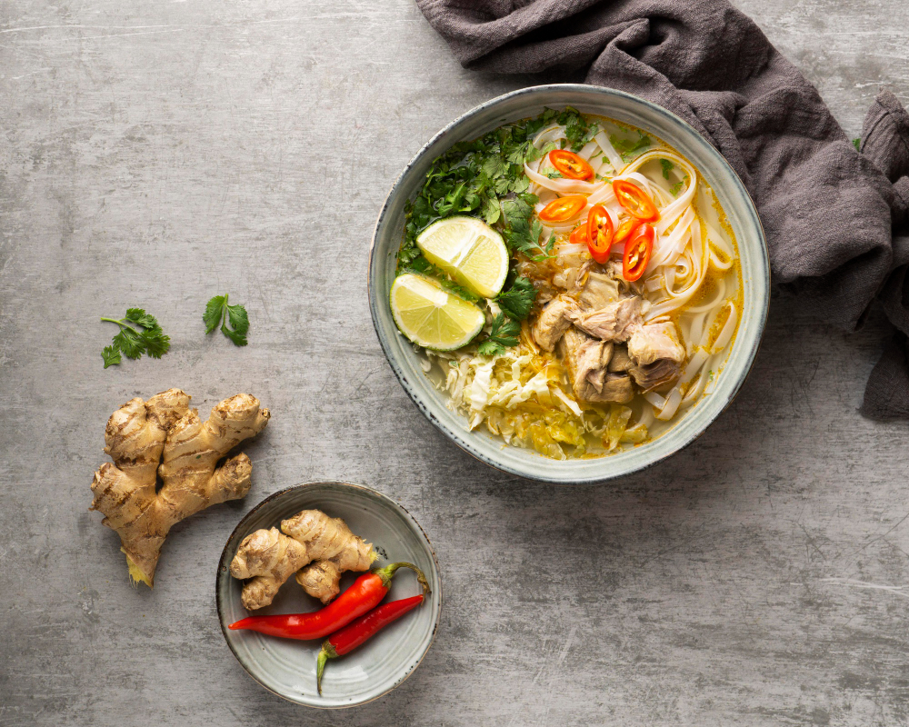

Soto Ayam

Soto Ayam is a traditional Indonesian chicken soup. It consists of chicken broth, shredded chicken meat, rice, and various herbs and spices. The dish is known for its aromatic and flavorful yellow broth, thanks to turmeric and other spices. It's commonly served with rice, green onions, and fried shallots as garnish.
Ingredients
- 1 whole chicken (cut into pieces)
- 2 lemongrass stalks (bruised)
- 4 kaffir lime leaves
- 2 bay leaves
- 2 inches galangal (crushed)
- 6 shallots (chopped)
- 4 cloves garlic (minced)
- 2 inches turmeric (or 1 tsp turmeric powder)
- 2 inches ginger (crushed)
- Salt and pepper to taste
- Cooking oil
- 8 cups water
Instructions
- Heat oil in a large pot. Sauté shallots, garlic, ginger, and turmeric until fragrant.
- Add the chicken pieces and stir until they change color.
- Add lemongrass, kaffir lime leaves, bay leaves, and galangal.
- Pour in water and bring to a boil. Reduce heat and simmer for 30-40 minutes until chicken is tender.
- Remove chicken pieces, shred the meat, and set aside.
- Season the broth with salt and pepper to taste.
- Serve hot in bowls with shredded chicken, rice, and garnish with green onions and fried shallots.
Back to Home